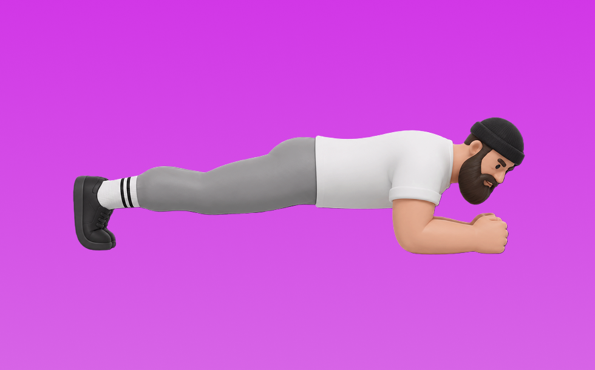

プランク

プランクとは、自重を使って「姿勢を保って支える」動作で腹筋群（腹直筋、腹横筋）を鍛える種目です。器具なしで手軽にでき、フォーム次第で負荷調整しやすいのが特徴で、頭から踵まで一直線に保ってキープします。体幹の安定性を高め、姿勢維持に役立つ効果が期待できます。
- 対象部位
- 体幹
- 器具
- 自重
- 記録形式
- 回数
- 別名
- フロントプランク
YouTube動画
-
初心者のためのプランクのやり方｜正しいフォームを解説
-
【腹筋＆体幹】基本を解説！プランク30秒3セットを一緒に
-
【最強プランク】初心者オススメ！腹筋を鍛える体幹トレーニング「プランク」の正しいやり方
-
【毎日3分】初心者向け！地獄のプランクサーキットで速攻お腹を引き締めよう！【腹筋トレーニングダイエットで痩せる】家で一緒にやってみよう
-
【プランク7種目】腹筋、背筋、お尻周りなどの体幹部(コア)を7種目4分間での筋トレです。姿勢改善、脂肪燃焼(ダイエット)から様々な競技アスリートの方までおすすめです。
-
【毎日3分】爆速で腹筋を割る鬼のプランク7種目
-
【超初心者向け】プランクで腹筋と体幹を鍛える【3分間】
-
【50代・60代向け】腹筋を鍛えるプランクの正しいやり方！初心者向けにフォームを解説
-
3分プランクでお腹痩せ！腹筋・背中・お尻全身引き締める最強筋トレ！【ジムOK】
-
正しい「プランク」は30秒でも効果的！腹筋を割る体幹トレーニング
-
プランクを毎日1分行うとどうなるのか
-
【2分】プランク耐久サバイバル！腹筋＆体幹を鍛えぬけ
-
【3分だけ耐えて🔥】お腹を引き締めるプランクトレーニング【腰を痛めず安全に鍛える方法】
-
【初心者向けプランク】超簡単で無理なくできる！「膝つきハイプランク」の正しいやり方。2分のかんたん体幹トレーニング
-
【3分30秒】強靭な体を作り上げる体幹トレーニング8種目!!【インナーマッスル】
-
ぽっこりお腹が解消する初心者さん向け３分間プランク！
-
【毎日3分】初心者におすすめ！プランクの正しいやり方・基本フォーム【腹筋】
-
初心者向けのお腹痩せメニュー。「膝つきプランク」のやり方（2分）
-
【毎日4分】プランクチャレンジ！効果を落とさない「正しいポーズ」を解説
-
プランクを毎日30秒、1週間続けてみて！フォームが安定して、お腹に効かせやすくなるからおすすめ！
-
【4分間】初心者向け体幹トレーニング4種目！
-
【3分】春までにお腹痩せ間に合う！ソーランプランクでギュッと下腹引き締める🔥
-
お腹を割る！腹筋に効く「膝つきプランク」のやり方【筋トレ初心者向け】
-
3分プランク！ みるみるお腹が引き締まる☆ 【初中級者向け】 #208
-
【毎日3分】くっきり割れ目！爆速で腹筋を割る鬼のプランク7種目
-
「ハイプランク」をして上半身にしっかり効かせよう。トレーニングの正しいやり方を解説【2分】
-
【変わりすぎ注意】継続すれば必ず体が変わる4分間筋トレ
YouTubeショート
-
正しいフォームでプランクやったら腰回り激変😳#アラサーダイエット #垢抜け #ダイエット #ビフォーアフター #30代ダイエット #お腹痩せ #腰肉 #プランク #プランクチャレンジ
-
プランクを毎日1分続けると50代の体に起きること #雑学 #プチ知識 #筋トレ
-
反り腰さん専用プランクで姿勢改善&お腹痩せ！
-
実際にやりました。プランクの雑学
-
反り腰改善エクササイズ"ベイビープランク"#体幹 #反り腰 #体幹トレーニング #腹筋 #家トレ #腰痛 #腰痛改善
-
1時間プランクチャレンジ！ 1 hour Plank Challenge
-
本当に腹筋を引き締めたいなら、普通のプランクじゃなく、ひとつ上のプランクを目指して！ チャンネル登録をお願いします! #筋トレ #お腹痩せ #腹筋
-
プランク辞めて！
-
お腹の引き締めに効果的なプランクの正しいやり方！初心者必見！効果がしっかり出る腹筋トレーニング【ダイエット】
-
青木マッチョのプランクチャレンジ
-
意味ないプランクあるある #shorts
-
もっと腹筋に効かせるプランクはこうやります！ #筋トレ #腹筋 #お腹痩せ
-
「1日4分、家で筋トレしてます」と聞いた時のトレーナーの反応#shorts
-
【腕立てが胸に効かない人！】すぐに解決できます！ #腕立て #筋トレ初心者 #大胸筋
動作方法
- 体幹を固定して姿勢を整える
- 反動を使わず、腹部の収縮を感じる
- 呼吸を止めずに動作する
動作ポイント
- 腰を反らしすぎない
- 首に力を入れすぎない
ワンポイントアドバイス
- 回数よりも体幹の安定を優先する
- 腰に違和感がある場合は可動域を調整する
目的別回数設定
目的や体力に応じた一般的な目安です。無理のない範囲で調整してください。
- 筋力アップ
- 1〜5回
- 筋肥大
- 6〜12回
- 持久力アップ
- 13〜20回
YouTube動画について
動画はYouTubeの公開情報をもとに表示しています。内容は投稿者によるもので、Biggrによる監修ではありません。
アプリを入手
筋トレやトレーニングの記録はBiggrにお任せください。今すぐ無料で使い始められます。